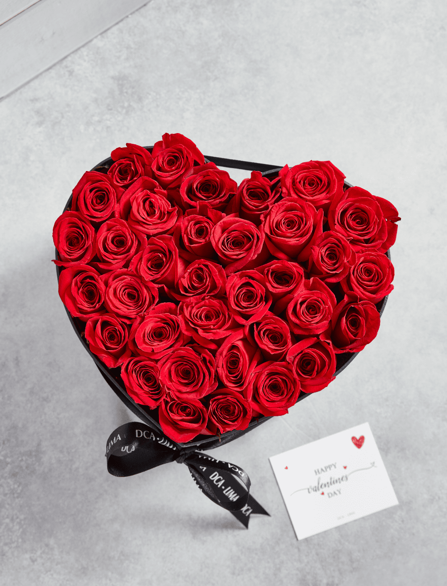
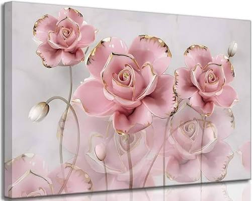
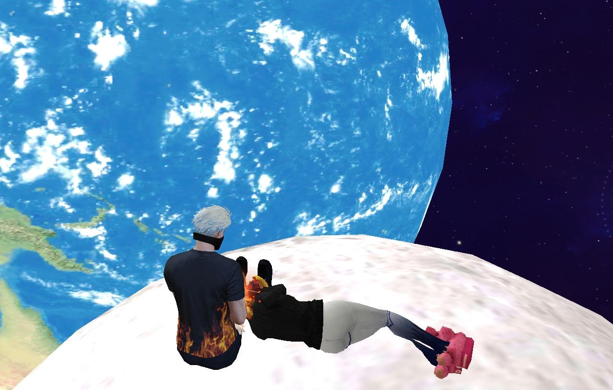
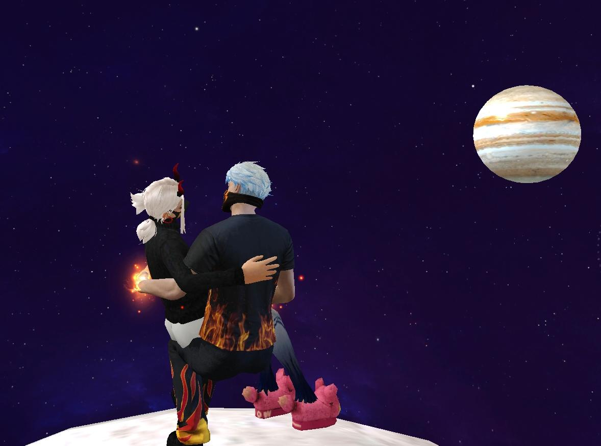
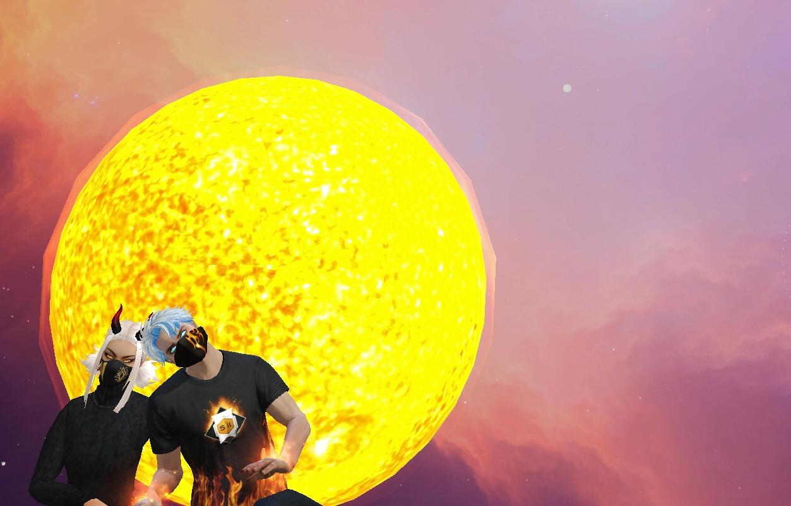
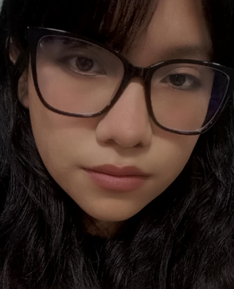
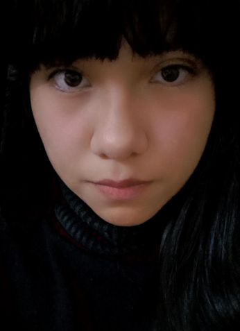

Nuestra Historia

El día que todo comenzó
Fue una casualidad, pero la casualidad mas bonita que me pudo haber pasado, te conoci por un amigo, fue raro por que yo entraba a jugar jaja y alguien andaba peleando con mi amigo jajaja, empezamos a hablar y desde hay tuvimos una conexion increible, Te hacias la fuerte aunque eras muy amable.

Empezamos a hablar más
Los nervios me consumían, pero tu sonrisa hizo que todo el miedo desapareciera en un instante, yo no era de hablar mucho, muy poco podia hablarte, pero aún asi, a pesar de que no te hable, nunca perdimos conexion, no nos aburriamos y poco a poco empezamos a hacer mas cosas. Te convertiste en mi Mejor Amiga

Conociendonos
Jaja, empece a hablarte mas por micro y siempre que te hablaba te quedabas quieta, me daba risa por que hablabas y cuando yo empezaba a hablarte te quedabas callada para escucharme y luego escribirnos por whatsapp.

Mi razón de ser contigo
Ya no solo era jugar por diversión, mi motivo de jugar te volviste tu, yo me habia aburrido del juego, pero siempre te veia y siempre sentia la necesidad de volver para estar a tu lado, siempre me sacabas una sonrisa y las risas nunca faltaban.

Reencontrarnos por los números
Te encontre Denuevo, por destinos de la vida, nos volvimos a hablar, nos empezamos a contar más cosas, no hablabamos mucho esta vez pero habia conexion que no se rompia, por mas que nos distanciaramos mas, siempre volviamos uno a otro, eso siempre me gusto de nuestra amistad.

Arrepentimiento
Me arrepenti, la malogre y fue el tiempo que mas me arrepenti y el momento donde menos me querias recibir, pero aún asi lo hiciste, te agradezco mucho por eso Gracias por que por mas que me fui, siempre estuviste ahi para mi.

Volver a intentarlo esta vez distinto
Volvimos a hablar, iniciando otra vez pero, esta vez era diferente, conocimos mas el lado del uno como del otro, cosas que no sabia verdaderamente de ti, las empece a aprender y me fui soltando mas contigo, como tu conmigo, desde ahi entendi que tambien como dijo sebastian yatra: Cuenta una leyenda, que todos nacemos con un hilo rojo, invisible, atado a la persona que amaremos por siempre, sin importar el tiempo, el lugar o las circunstancias, el hilo se podra estirar, contraer o enredar, pero jamas romperse. Empece a darme cuenta que lo que sentia no era mas que ser tu amigo, queria protegerte y empece por tratarte como mi hija o hermana aunque era una excusa jaja, por que tenia miedo a malograr lo nuestro.

Nuestro Inicio
Tocamos el tema indirectamente, y al final nos dimos cuenta que ambos sentiamos lo mismo y asi fue como empezamos a salir, aunque estemos a distancia, siempre seras tu mi razon de ser feliz y por la cual siempre te voy a elegir. Te amo mi Reina

Primer Mes Juntos
Nuestro Primer Mes Juntos, Y para toda una vida Juntos, y como te dije arriba, siempre estuviste para mi, como tu dices que yo para ti, pero esa vez te falle y ya no lo repetire jamas, Siempre seras mi prioridad y la razón para siempre estar a tu lado, en las buenas o en las malas. Con todo mi Corazón Te puedo decir TE AMO MI VIDA❤️